Figure 4.1

The geographic center of North America is located near Rugby, North Dakota. Notice the flags of Mexico, Canada, and the United States.
Source: Photo by R. Berglee.
The realm of North America as a continent extends from the polar regions of the Arctic in northern Canada and Alaska all the way south through Mexico and the countries of Central America. Geographers usually study the continent by dividing it into two separate realms based on differences in physical and cultural geography. Both the United States and Canada share similar physical geography characteristics as well as a common development history with either a British or French colonial legacy. Mexico and Central America are dominated by more tropical climates and were colonized mainly by the Spanish. The United States and Canada—the second- and third-largest countries in the world in physical area, respectively—make up more than 13 percent of the world’s total landmass. The Atlantic Ocean borders their eastern edge, and the Pacific Ocean creates their western boundary. To the north is the Arctic Ocean. The North American region is highly urbanized—about 80 percent of the population lives in cities—but other vast areas, especially in Canada, are sparsely populated. Although some natives remain, most of North America’s diverse population consists of immigrants or descendants of immigrants from other world regions. The United States is the world’s largest economy, and both countries enjoy high standards of living as technologically developed countries.
North America is divided into a number of physical regions with distinct landforms. The western part of the continent is marked by north-south mountain ranges in the Rocky Mountains and Pacific Mountains and Valleys physiographic provinces, with the Intermontane Basins and Plateaus in between. The eastern portion of North America is defined by the ancient Appalachian Highlands, a mountain range that is much less rugged than the Rockies but with no less influence on the history and development of the United States. The interior of the continent is characterized by plains—the Interior Lowlands and the Great Plains. To the north is the Canadian Shield, geologically the oldest part of North America, and a sparsely populated area with poor soils. At the southern and eastern edge of the continent is the Gulf-Atlantic Coastal Plain, a relatively flat zone that extends from New York to Texas.
Figure 4.2 Physical Regions of the United States and Canada

Source: Image courtesy of Cephas, http://commons.wikimedia.org/wiki/File:Major_habitat_type_CAN_USA.svg.
The climates of the United States and Canada include the frigid type E climate of the tundra of northern Canada and Alaska, the tropical type A climate of southern Florida and Hawaii, the type C climates of the humid eastern United States, the seasonal type D climates of the northern United States and most of Canada, and the arid type B climates of the Southwest and Great Plains. In general, there are two different climate patterns common in North America. The first pattern is that temperatures get warmer as you travel from north to south and get closer to the equator. The second pattern is that there is a decrease in precipitation as you move from east to west across the continent until you reach the Pacific Coast, where rainfall is abundant again.
The second climate pattern is created by the rain shadow effect of the western mountain ranges. As wet air masses move from the Pacific Ocean over the North American continent, they run into the Cascades and the Sierra Nevada. The Cascade ranges of Washington State and Oregon cut off moisture from falling on the leeward side of the mountains; thus eastern Washington State and eastern Oregon are semiarid. The western United States experiences a strong rain shadow effect. As the air rises to pass the mountains, water vapor condenses and is released as rain and snow. This means that west of these mountain ranges there is much more precipitation than to their east, resulting in arid and semiarid lands. The entire Great Plains of the western United States are affected by the rain shadow effect and have a semiarid type B climate.
Both the United States and Canada are products of European colonialism. North America was inhabited by many Native American groups before the Europeans arrived. Complex native societies, federations, and traditional local groups faced the European invasion. While the indigenous population of North America was robust at the time of the European encounter, within a few generations, these native peoples were overwhelmed by the diseases, weapons, and sheer numbers of the European arrivals.
The Europeans—mainly the Spanish, French, and British—left a strong imprint on their North American colonies. The oldest colonial city in North America is St. Augustine, Florida (1565), founded by Spain when Florida was a remote portion of the Spanish Americas. Spain also had outposts in what are now California, Arizona, New Mexico, and Texas. The forms of settlement characteristic of those areas were similar to the Spanish colonies of Central America. While Spain governed what is now the southern United States, France ruled Canada and much of the interior of the North American continent. The French first came to Canada in the late 1500s to engage in fishing in the North Atlantic and soon expanded their reach by creating a fur trade in the area surrounding the Great Lakes and throughout the Mississippi River system.
Although there were fewer settlers from France than from other European countries—especially in what became the United States—this French era left behind place names (Baton Rouge and Detroit), patterns of land use, and a French-speaking population in Canada. Despite the early influence of Spain and France in North America, most North Americans speak English as their native language as a result of Britain’s colonial dominance in the United States and Canada. The earliest permanent British colony, Jamestown, was founded in 1607 in what became Virginia. The British built up a successful empire in the New World. Their thirteen American colonies became populous, economically robust, and militarily strong enough to gain independence in 1776. Canada functions as an independent country but remains part of the British Commonwealth.
Figure 4.3 European Influence in the Colonial United States

Source: Map courtesy of the National Park Service, http://www.nps.gov/history/history/online_books/explorers/images/map1.jpg.
The US population surpassed the three hundred million mark in 2006. Canada now has over thirty-four million people. The US population is growing by about 2.5 million people each year. A little less than half the growth can be attributed to immigration and the rest to birth rates. The pace of growth is slower than the world average but more rapid than many other industrialized countries such as those in Europe.
The population is not uniformly spread over North America, nor are the population growth rates the same in all locations. Most Canadians live in near proximity to the US border. The North American population tends to be clustered in cities, with about 80 percent of US citizens residing in urban/suburban areas. Additionally, over time, the population has been moving southward and westward. US states experiencing the greatest rates of population growth include those located on the southern portion of the eastern seaboard, as well as Texas, Nevada, Utah, California, Oregon, and Washington. Three states—California, Texas, and Florida—accounted for about a third of the entire US population growth since 1990. Still, the Northeast is the most densely populated area of the country thanks, in large part, to the megalopolis that forms the corridor and encompasses the cities from Washington, DC, north to Boston. The largest concentration of Canadians lives in the most southern-reaching province of Ontario. For this reason, the province of Ontario is often referred to as South Canada.
In general, the population of minorities is growing most rapidly. Some of the fastest-growing populations in the United States are Hispanics. Another interesting factor in population growth is the increase in life expectancy. As more people live longer, the growth of the segment of the population aged sixty-five has doubled in the last fifty years. However, it appears that the growth of this population segment is slowing. Of this group, the greatest increase was seen in people aged eighty-five years and older.
The American population tends to be on the move. The US Census Bureau data show that the average American moves once every seven years; these data further predict that about forty million people move each year.“Geographical Mobility between 2004 and 2005,” US Census Bureau, http://www.census.gov/population/www/pop-profile/files/dynamic/Mobility.pdf. Data also indicate Americans will move to a metropolitan area. Urbanization has been a trend since about 1950. Until that time, most Americans lived in small towns or more rural settings. The population density of the cities, and especially the suburban areas, has grown steadily since that time, bringing about a rural-to-urban population shift. Now a significant majority of people in North America live in suburban areas.
Urbanization has brought some challenges. The layout of these areas often makes owning a car a necessity; thus traffic congestion is a major problem in many suburban and urban areas. Other issues that have arisen are overcrowded schools, racial tensions, and a widening economic gap between the wealthy and impoverished. As people move to the cities, housing and other resources might not be able to meet demand, forcing prices upward. The gap between the cost of living in an urban area and the population’s ability to pay has contributed to poverty and homelessness. Environmental issues also abound, including how to reduce or eliminate smog, manage waste, and ensure adequate clean water supplies.
Identify the following key places on a map:
With abundant resources and opportunity, the original thirteen coloniesThe colonies of Britain in North America that fought the American Revolution and became the United States. prospered and expanded into what became the fifty US states. The political geography of this nation was a product of various treaties and acquisitions that eventually resulted in the country extending from the Atlantic to the Pacific Ocean. Fueling the expansion was the concept of Manifest DestinyThe belief that it was the duty and destiny of Americans to continue to move westward and conquer all the land between the Atlantic and Pacific Oceans.: the belief of some Americans that the new nation was divinely predestined to expand across the continent. The United States negotiated with France for the Louisiana Purchase in 1803, acquiring millions of acres in the central United States (see Figure 4.5 "Geopolitical Map of the Creation of the United States from the Atlantic to the Pacific"). Florida was acquired from Spain in 1819, and Texas was annexed in 1845. The British sold portions of the Pacific Northwest to the United States, and the exact northern boundary between the United States and Canada was settled in 1846. Through conflicts with Mexico, large portions of the West were ceded to the United States in the mid-nineteenth century. Alaska was purchased from the Russians in 1867 for only $7.2 million. Alaska and Hawaii were the last two possessions to enter into statehood, which they did in 1959.
Figure 4.4 The Thirteen Original Colonies
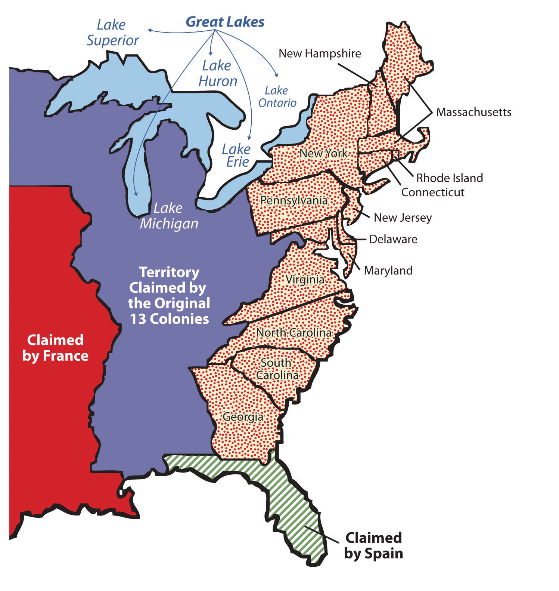Figure 4.5 Geopolitical Map of the Creation of the United States from the Atlantic to the Pacific
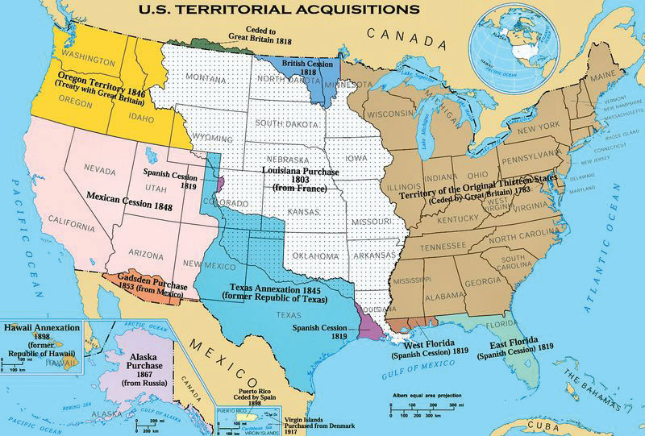Source: Map courtesy of National Atlas of the United States, http://commons.wikimedia.org/wiki/File:U.S._Territorial_Acquisitions.png.
The concept of Manifest Destiny came from the works of John O’Sullivan in 1839. O’Sullivan wrote,
The far-reaching, the boundless future will be the era of American greatness. In its magnificent domain of space and time, the nation of many nations is destined to manifest to mankind the excellence of divine principles; to establish on earth the noblest temple ever dedicated to the worship of the Most High—the Sacred and the True. Its floor shall be a hemisphere—its roof the firmament of the star-studded heavens, and its congregation an Union of many Republics, comprising hundreds of happy millions, calling, owning no man master, but governed by God’s natural and moral law of equality, the law of brotherhood—of “peace and good will amongst men.”“John L. O'Sullivan on Manifest Destiny, 1839,” http://www.mtholyoke.edu/acad/intrel/osulliva.htm.
As the United States developed, it acquired external colonial possessions. With victory over Spain in the Spanish-American War of 1898, the US government gained control of the Philippines, Cuba, Puerto Rico, Guam, and various Pacific islands. Cuba and the Philippines later became independent countries, but Puerto Rico and Guam continue to be part of the United States. The US Virgin Islands were purchased from Denmark in 1918 after World War I as a location to provide strategic military support to protect the shipping lanes through the Caribbean and the Panama Canal.
The thirteen original colonies are often grouped into three regions, each with its own economic and cultural patterns. These three areas—New England, the Mid-Atlantic, and the South—are considered culture hearthsThe place where a new culture forms and from which it spreads., or places where culture formed and from which it spread. The three regions were source areas for westward migration, and migrants from these regions carried with them the cultural traditions of their culture hearths. New England was characterized by poor soils, subsistence agriculture, and fishing communities and was the birthplace of North America’s Industrial Revolution. Its largest city was Boston. Settlers from New England traveled west across New York State and into the upper Midwest and the Great Lakes region. The Mid-Atlantic region, focused on Philadelphia, Pennsylvania, was known for its fertile soils, prosperous small-scale agriculture, and multinational population. Prosperous farming led to a vibrant economy and a robust network of towns and cities. People who wanted to migrate west from this region traveled down the Great Valley into the Appalachian Mountains and across the Cumberland Gap into Kentucky, or they crossed Pennsylvania and traveled west via the Ohio River valley. The heart of the South was Virginia, a region oriented around plantation agriculture. The South was overwhelmingly rural, and in time the bulk of its agricultural workforce consisted of slaves brought to the United States from Subsaharan Africa.
Westward migration was spurred along by the gold boom in California (1849) and by the completion of the transcontinental railroad (1869). The settlement frontier pushed westward during the course of the nineteenth century and was declared “closed” by the Bureau of the Census in 1890. This did not mean that settlers were spread uniformly across the continent by 1890; indeed, vast areas of the Great Plains and the mountain west remained sparsely populated by Europeans at that time. The Homestead Act of 1862 also encouraged westward migration by offering 160 acres of free land to households willing to move west. The continental United States had been organized into official states by the end of the nineteenth century, except Oklahoma (1907), Arizona (1912), and New Mexico (1912).
Figure 4.6 The Holy Trinity Serb Orthodox Church in Butte, Montana
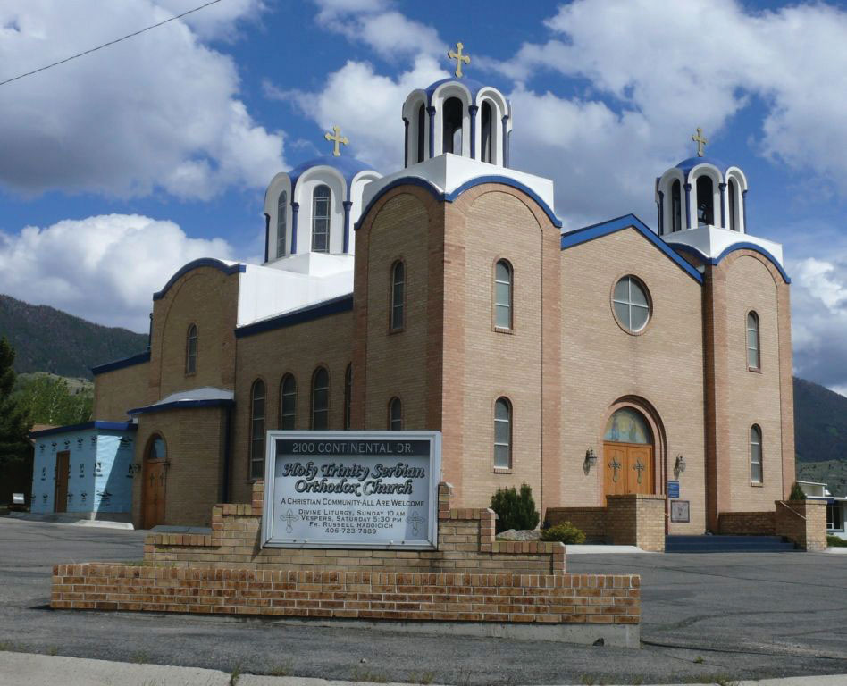This church gives testimony to the impact that European immigration has had on the North American continent and the freedom of religion that the US Constitution provides.
Source: Photo by R. Berglee.
Most US residents at its founding in 1776 had roots in Great Britain, with large numbers from other northern and western European countries and many others from Africa (most of whom were slaves in the South). During the nineteenth century, migrants continued to immigrate to the United States as its economy grew, especially after the 1830s. Germans and Irish began arriving in large numbers, joining others from Britain and other countries, predominantly those in western Europe. As the century progressed, others from southern and eastern Europe, from countries such as Italy, Russia, and Austria, became the most significant stream of immigrants to the United States. The new arrivals were different from the early British immigrants: they practiced Roman Catholic or Eastern Orthodox Christianity (not Protestantism), they primarily moved to urban areas, and they found work in the new manufacturing sector growing rapidly in the Northeast and around the Great Lakes. Very few immigrants came from Latin America or Asia at that time.
The Industrial Revolution that began in Great Britain in the late eighteenth century eventually moved across the Atlantic and took hold in the United States. Rapid industrial growth emerged in the nineteenth century and was focused in the northeastern United States around the Great Lakes in an area called the Manufacturing BeltThe upper Midwest and the northeastern United States; the heart of the early manufacturing sector. (Figure 4.7 "Manufacturing Belt Turned Rust Belt"). Mechanized manufacturing began with textiles (New England), moved to steel and other metals (Pennsylvania and Indiana), and later was dominated by the manufacture of automobiles (Michigan). Of course, manufacturing would not have been possible without an abundant supply of power. Coal mining became an important industry in western Pennsylvania and in Appalachia.
Manufacturing took place in the cities and towns of the Manufacturing Belt. Not until the second half of the twentieth century did manufacturing move to rural areas; until then, it was almost entirely an urban activity. As the United States went through its Industrial Revolution, its population shifted from being almost entirely rural to being mostly urban. In 1790, only about 5 percent of the US population lived in urban areas; by 1920, about 50 percent lived in cities. As the rural to urban shift took place, the function and form of US cities also changed.
Figure 4.7 Manufacturing Belt Turned Rust Belt
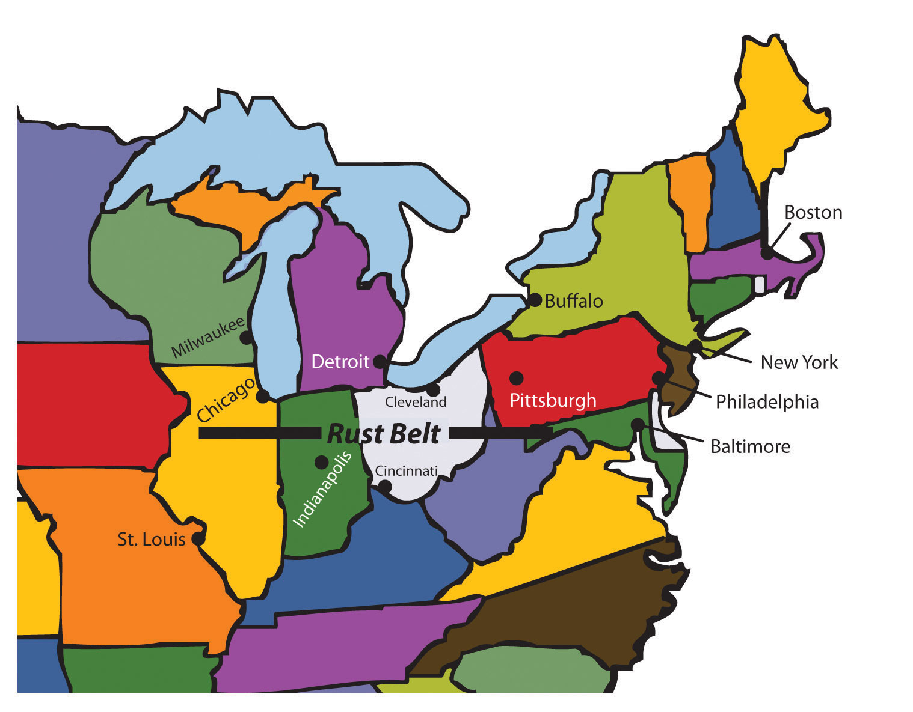Table 4.1 US Population and Percentage Urban
| Year | Percentage Urban | Population in Millions |
|---|---|---|
| 1790 | 5.1 | 3.9 |
| 1810 | 7.3 | 7.2 |
| 1830 | 8.8 | 12.9 |
| 1850 | 15.4 | 23.2 |
| 1870 | 25.7 | 38.6 |
| 1890 | 35.1 | 63 |
| 1910 | 45.6 | 92.2 |
| 1930 | 56.1 | 123.2 |
| 1950 | 60 | 151.3 |
| 1970 | 73.6 | 203.3 |
| 1990 | 75.2 | 248.7 |
| 2010 | 82.0 | 308 |
Source: “The World Factbook,” Central Intelligence Agency, http://www.census.gov/population/censusdata/table-4.pdf.
From the colonial era until the late nineteenth century, US cities were walking citiesA city developed before the automobile or mass transportation, designed for accessing everything on foot.. Because most Americans lived on farms, cities were small, compact, and centrally oriented: everything was located within walking distance. Only wealthy people had access to transportation by horse, and city dwellers needed to live within a short distance of where they worked, shopped, and carried out all their activities. The invention of the electric streetcar (1888) allowed cities to increase in size. People could live farther from their place of employment as long as they lived within walking distance of a streetcar line. Streetcar suburbs grew up along streetcar lines, and these neighborhoods were often segregated by ethnicity and race. Fewer people lived in downtowns, which became dedicated to retail and manufacturing. Cities remained oriented around a central business district (CBD)The location in a city that is considered the downtown, characterized by high rents and high density of buildings and commerce., which was often located near the railway station. Factories needed to be near modes of transportation for both shipping in parts and shipping out completed products and so that workers could easily get to work.
Large numbers of middle class Americans began acquiring automobiles after about 1920; this eventually led to a complete rethinking of the spatial layout of the city. Automobile suburbsA residential area outside the city center to which people commute by automobile. sprang up outside the traditional city limits as people were able to buy homes far from streetcar lines or railway stations. Cities became increasingly decentralized: people could go shopping in suburban malls instead of downtown department stores, factories could spring up at highway interchanges and not only near rivers and the railroad, and people could live in one suburb and work in another instead of living in the suburbs and working downtown. Neighborhoods became even more racially and economically segregated than they had in the past as middle-class whites moved into the new automobile suburbs and left the poorer African Americans behind in the cities.
By the late twentieth century, the automobile had led to a new urban form: the edge citySometimes called a “suburban downtown,” a high-density business district that forms outside the limits of a traditional city, often at the intersection of major highways. Edge cities may contain shopping malls, hotels, office parks, and entertainment venues.. Edge cities are areas of dense urban development outside the boundaries of the traditional city. They often form at the intersection of major interstate highways and contain shopping malls, office complexes, high-rise apartment buildings, industrial parks, restaurants, and hotels. Sometimes edge cities are called suburban downtowns. Edge cities have supplanted the CBD as the destination of choice for Americans, whether they are heading to work or to play.
For the purpose of understanding economic geography, all economic activities can be grouped into one of four categories, each with its respective terms, depending on the nature of what is being produced:
The tertiary and quaternary economic sectors are often thought of together as the service sector. In the explanation of how countries gain national income (Section 1.4 "Globalization and Development"), only primary and secondary activities produce actual physical products, and manufacturing traditionally earns the highest value-added profits. Tertiary activities are selective in gaining national wealth. For example, service activities such as tourism can bring in national wealth if the visitors are from outside the country. Tourism within a country can also influence economic conditions by increasing the amount of consumer spending.
During the colonial era and into the nineteenth century, when the majority of Americans lived on farms and worked in agriculture, most economic activity in the United States took place within the primary economic sector. Today, the primary sector is still an important component of the US economy, but far fewer people are employed in it. For example, less than 1 percent of Americans make their living by farming, but agricultural output has continued to grow because of advancements in mechanization and the development of high-tech seeds, fertilizers, and pesticides. The United States has been able to export surplus agricultural output to other parts of the world. Fewer people work in coal mines than in the past, but because of new mining technologies and methods such as mountaintop removal, coal production remains high.
The geographic distribution of primary activities depends both on the location of natural features such as physical geography and climate and on the location of the market for a particular crop or resource. The nineteenth-century German economist Johann von Thünen created a model that predicted land use around a central market. In his theory, land closest to the market would be used to produce crops that were expensive to transport, such as dairy. Land far from the market would be used for the production of crops that were less expensive to transport and less perishable, such as grain. The von Thünen modelA model that seeks to predict agricultural land use in a closed economic system, with only one market surrounded by land of uniform quality. predicts a series of concentric rings surrounding a central market, with each ring producing a different kind of crop. If the von Thünen model is applied at a much larger scale to the United States as a whole, with the densely populated urban zone from Boston to Washington, DC (called a megalopolis), used as the central market, the model does a fairly good job predicting the United States’ agricultural land use. Dairy farms are found close to the market, grain farms are farther away, and ranch lands used for livestock production are even farther away.
Figure 4.8 The von Thünen Model

The von Thünen model as it relates to the development west of the East Coast megalopolis. For example, New Jersey is called the Garden State, Appalachia has its forests, the Midwest has its agricultural production, and the Great Plains has its large cattle ranching operations. This model was more applicable in past centuries for local communities when modern transportation technology was not available.
Figure 4.9 Farm Resource Regions
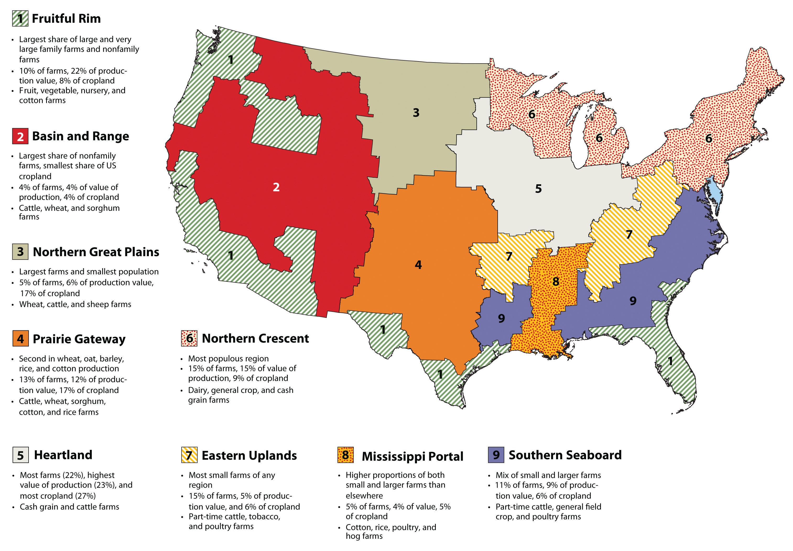Source: Map courtesy of the US Department of Agriculture, http://www.ers.usda.gov/publications/aib760.
Anything that involves the processing of raw materials—manufacturing—is a secondary activity. As the United States moved into the Industrial Revolution and into the mid-twentieth century, the percentage of the US workforce involved in manufacturing grew from almost nothing until it peaked in the late 1970s. It was the main area of economic growth for decades. Although manufacturing was present in most areas of the country, it was focused in the northeastern United States and along the Great Lakes. Factories were close both to the reserves of labor and to the markets for manufactured products found in the densely populated Northeast. The steel industry was located in Pittsburgh and its environs because of the area’s access to iron ore (mined in Minnesota and transported via the Great Lakes) and to coal (mined in Pennsylvania, West Virginia, and other parts of Appalachia).
As manufacturing has grown in other parts of the world, the secondary economic sector has declined in the United States. US labor statistics indicate that the United States lost about five million manufacturing jobs between 2000 and 2010.Sheryl Nance-Nash, “‘Made in America’ Leaders That Really Make a Difference,” Daily Finance, http://www.dailyfinance.com/2011/07/01/made-in-america-leaders-that-really-make-a-difference/. Many of these jobs were lost to countries with lower labor costs, such as Mexico or China.
The third group of economic activities takes place in the tertiary and quaternary sectors, commonly known as the service sector. Tertiary and quaternary activities create services, not physical products. Service jobs include everything from engineering to finance, restaurants to sports, and childcare to medicine. The tertiary sector makes up more than three quarters of the US economy, as measured by its share of the gross domestic product (GDP), which is the total value of all goods and services produced in a country in a given year. The GDP is then divided by the country’s population to provide a GDP per capitaThe total value of goods and services produced by a country, divided by the population. statistic. The 2010 estimated GDP composition by sector for the United States is shown in Table 4.2 "US GDP by Sector (2010 Data)".
Table 4.2 US GDP by Sector (2010 Data)
| Economic Sector | GDP (%) |
|---|---|
| Agriculture | 1.2 |
| Industry and mining | 22.2 |
| Services | 76.7 |
Source: “The World Factbook,” Central Intelligence Agency, https://www.cia.gov/library/publications/the-world-factbook/geos/us.html.
These figures show that the United States has shifted to a postindustrial service economy. The rise of the information age in the latter part of the twentieth century shifted the workforce into the information sector. By the start of the twenty-first century, less than 2 percent of the US workforce was employed in agriculture, 15 percent in industry, and the rest in services (18 percent) and information activities (65 percent).
The locations of service-sector jobs are much more flexible than are jobs in the primary or secondary sectors. They are called footloose jobsJobs that are not tied to a specific location because of access to raw materials or manufacturing infrastructure. These jobs can be carried out in any location.: an accountant can live in New York or in Denver, whereas it is much more difficult for factories to move from one place to another and it is impossible for farms to relocate. Many of the information-technology jobs are emerging in the southern regions of the United States called the Sun BeltThe region extending through the American South, Southwest, and into California.. Southern cities such as Atlanta, Dallas, and Phoenix are centers of innovation and population growth. The warmer climate, combined with a lower cost of living and less congestion, makes the Sun Belt an attractive location for emerging information-based companies. Note that the popularity of the South and West for service-sector jobs only came about after the invention and adoption of air-conditioning. Air-conditioning was not widespread until after the Second World War in the 1950s.
While the population of the Southern states has increased, the population of some Northern states has decreased. The Sun Belt has always been a destination for people escaping the harsh winters of the Northern states. This has usually been only a seasonal transition. However, the new trend is one of permanent growth because of the increase in information technologies and in the service industry. Emerging companies looking to establish their businesses have targeted major cities from the Carolinas to the Southwest.
The United States has not only undergone a massive rural-to-urban shift in its population; intermigration within the United States from one region to another has also been prevalent. Each of the US regions has witnessed changes in demographics because of migration patterns.
In the agricultural regions of the United States, such as the Midwest, the migration pattern has been caused by changes in farm technology. Portions of the United States were opened up for agriculture because of the Homestead Act of 1862, where each person could receive 160 acres from the government to start a farm. They could keep the acres if they lived on them and farmed them for a period of years. In the 1800s, 160 acres was enough land to support a family if conditions were appropriate. The Industrial Revolution brought about improved farm equipment and technology. Larger and more expensive tractors and improved farming methods pushed the small farmers to sell out. Farms increased in size and fewer people were required to operate them. Since fewer farm workers are needed in rural areas, there has been a major rural-to-urban shift in the population. Central cities are increasing in population, while small towns and rural areas in the Midwest and across the nation are decreasing in population.
The freedom of personal expression in the United States has supported individual ingenuity and creative ambition to create the largest economy in the world. US citizens have pushed American corporations to become a major force in the world markets. Products and franchises from the United States are being distributed throughout the world. Items such as fast food, computers, news networks, and Hollywood movies have become the products of choice in countries across the globe. The English language dominates the Internet, which has been heavily influenced by US corporations. The power of the American DreamThe belief that through hard work a person can achieve upward mobility and financial success, no matter his or her background.—the idea that through hard work anyone can achieve upward mobility and financial success—as it is portrayed in the US media holds sway in the minds of people both in the United States and abroad.
Figure 4.10 US Corporate McDonald’s Franchise in Israel
Source: Photo by R. Berglee.
US news networks, such as CNN, are so dominant that small countries, having no resources to create networks, rely on the US networks to deliver their world news. US fast food franchises, of which McDonald’s is the largest, exist in over one hundred countries. Despite humble beginnings in Arkansas, Walmart grew to become the world’s largest corporation. It has become the buyer and seller of retail trade that shapes and molds cultural attitudes and fashions internationally.
The size of the US population (more than 310 million strong as of 2010) and the country’s vast resource base have allowed it to become a world military superpower. After the fall of the Soviet Union, the United States became the most powerful military force in the world. The United States has also dominated the world’s economy and its communications networks. The advancements of multinational corporations have in essence enabled the sale of America to the rest of the world. The selling of American products and the large consumer market in the United States have provided the profits that have fueled global economic markets.
The United States has become a worldwide franchise of its own. Corporate colonialism has advanced the American brand to a level that is now synonymous with consumerism, success, and power worldwide. Media advancements have promoted the concept of the American Dream across the seven seas. The reaction of the global community includes both admiration and disdain. Many view Americanism as interchangeable with globalization. Some welcome it; others reject it. The country of Iran is an example of this dichotomy. Young people in Iran wearing blue jeans gather in secret to watch American television programming from a hidden illegal satellite dish, while at the same time the anti-American forces in their government condemn America as decadent, immoral, and imperialistic.
Corporate colonialism has become a dominant force impacting the global cultural fabric. Supporters appreciate access to American goods and services, while opponents claim that the English language and the American corporate franchise system are destroying the culture and heritage of untold millions who see their unique traditional ways of life being overshadowed and destroyed.
Some argue that American television advertisements exemplify a trend that supports conformity and uniformity in American culture. They contend that America’s unique cultural diversity, which historically has provided ingenuity and creativity, is being eroded by the franchising of similar retail products, fast food, professional sports, and Hollywood entertainment that stifle the creative will of the American people. Others continue to see opportunities to pursue the American Dream and believe that innovation and ideas continue to emerge in spite of these trends.
Figure 4.11
Walmart is one of the greatest success stories of the American Dream. It started in Arkansas with one store and grew to become the largest corporation in the world. Now it is one of the most aggressive forces of corporate colonialism across the globe.
Source: Photo by R. Berglee.
Many people worry about the future of the American Dream. American culture continues to evolve as people face changing economic and social conditions. Over the course of their history, Americans have faced both difficult and prosperous times, and now the future of this vibrant country is in the hands of the current generation. The United States has developed into one of the most powerful countries on the planet. Will the American Dream continue to motivate people in the future? Only time will tell.
Identify the following key places on a map:
Figure 4.12
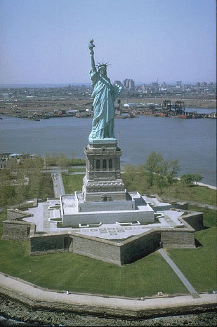The Statue of Liberty has long been a symbol of the American ideals that welcome immigrants to America.
Source: Photo courtesy of the US Government, http://commons.wikimedia.org/wiki/File:Freiheitsstatue_NYC_full.jpg.
Early immigration to America was dominated by people from the British Isles, resulting in an American population for whom speaking English and practicing Protestant Christianity was the norm. There were some regional exceptions to this, such as Catholicism in Maryland and the widespread speaking of German in Pennsylvania, but by and large English and Protestantism were standard in the American colonies. As migrants arrived in the United States from non-English-speaking countries, within a generation they learned English and assimilated into American society, giving rise to the idea of the United States as a cultural melting potThe coming together a diverse group of immigrants to form one society or to share common ideals.. People were drawn to the United States by the hope of economic opportunities; most immigrants were poor and came to the United States to make a living and improve their financial well-being. They viewed assimilation into mainstream society as a necessity for success. They believed in the American Dream—that through hard work, you could achieve upward mobility and financial success no matter your background. The dream came true for millions of Americans but remains out of reach for many who live in poverty.
As of 2010, the United States was home to approximately 310 million people and was the third-most populated country in the world after China and India. Among developed countries, the US population is one of the fastest growing, at about 1 percent each year. This is thanks to a fertility rate of about 2.1 that is higher than the 1.5 for that of most European countries, as well as a positive net migration rate (more people immigrating to the United States than emigrating from it). In terms of human well-being, life expectancy is more than seventy-eight years for men, and the average woman can expect to live more than eighty years. While this may seem high, especially when compared with a century ago, life expectancy in the United States is lower than in forty-nine other countries.
Although English has remained the dominant language, as a country of immigrants, the United States is home to people from all corners of the world and home to many cultural or ethnic minority groups. According to the 2010 census, the ethnic minority groups in the United States included 16.3 percent Hispanic (who can be of any race); 12.6 percent black or African American; 5.0 percent Asian and Pacific Islander; and 1.0 percent Native American (American Indians, Eskimos, and Aleuts).“2010 Census Data,” US Census Bureau, http://2010.census.gov/2010census/data/. An interesting trend is that Asians are growing faster than any other ethnic group in California, the nation’s largest state. The 2010 census reported that the Asian population in California had increased 31.5 percent since 2000 to a total of five million.
One of the most striking shifts in immigration patterns of the past few decades has been the dramatic increase in Hispanic/Latino immigrants to the United States. While there have long been Spanish speakers living in the United States (recall that Spain colonized Florida, Texas, and the Southwest before those regions became part of the United States), for most of American history the Hispanic minority had little impact outside of a few areas of the country. In 1970, Hispanics made up less than 5 percent of the US population, but by 2010, forty-eight million Hispanics made up about 16 percent of the population (Figure 4.13 "Hispanic Population in the United States and the US Sun Belt"). For the first time, Hispanics were the largest ethnic minority in the United States, surpassing blacks as the largest minority starting with the 2000 US census (12.5 percent Hispanic compared with 12.3 percent black). The US Hispanic population doubled between the 1990 and 2000 censuses. Between 2000 and 2006, Hispanic population growth accounted for about half the nation’s growth and grew about four times faster than the country’s population as a whole.
The growth of the US Hispanic population is a direct result of increased immigration from Latin America to the United States in the late twentieth and early twenty-first centuriesMichael Hoefer, Nancy Rytina, and Bryan C. Baker, “Estimates of the Unauthorized Immigrant Population Residing in the United States: January 2008,” Department of Homeland Security, accessed September 20, 2011, http://www.dhs.gov/xlibrary/assets/statistics/publications/ois_ill_pe_2008.pdf. and the Hispanic population having higher fertility rates than the non-Hispanic US population.Randal C. Archibold, “Arizona Enacts Stringent Law on Immigration,” New York Times, April 23, 2010, accessed September 20, 2011, http://www.nytimes.com/2010/04/24/us/politics/24immig.html.
Figure 4.13 Hispanic Population in the United States and the US Sun Belt
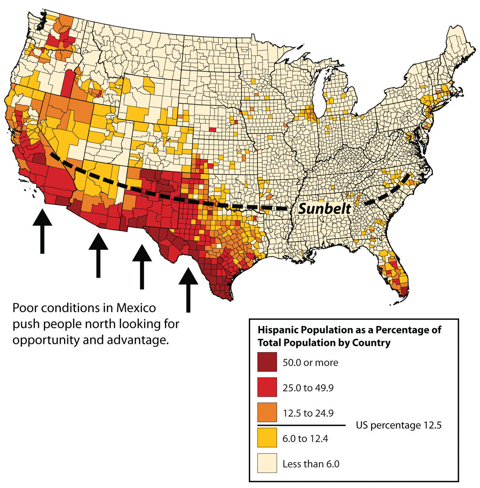Source: Map courtesy of NationalAtlas, http://www.nationalatlas.gov/.
Nearly half the Hispanics in the United States live in California or Texas, although there has been a large increase in the Hispanic population outside those states in the past decade, especially in the South. For example, Arkansas, Georgia, Tennessee, and North and South Carolina all experienced Hispanic population growth rates between 55 and 61 percent from 2000 to 2006. All regions of the country saw double-digit growth rates of their Hispanic populations during that time. In places such as California, the large Hispanic population has an especially significant impact on the economy, politics, and every aspect of social life: more than one-third of Californians are Hispanic (37 percent), while 42 percent are non-Hispanic white, and a much smaller minority are African American (7 percent).
Who are the Hispanics living in the United States? Most were born in the United States (60 percent), while the rest are immigrants. Two thirds are either from Mexico or of Mexican descent, while others hail from the US territory of Puerto Rico, Cuba, or the Dominican Republic. Note that all Puerto Ricans are US citizens and can move to and from the US mainland without any special documentation requirements. More Hispanics come from Central America than from South America. Hispanics work in all professions but are found in professions such as agriculture, construction, and food service at higher rates than the country’s non-Hispanic population.
Figure 4.14 Hispanic Population in the United States, 1970–2050
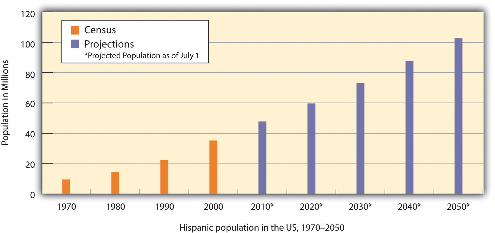Source: Data from the US Census Bureau, 1970, 1980, 1990, and 2000 Decennial Censuses; Population Projections, July 1, 2010, to July 1, 2050.
Figure 4.15
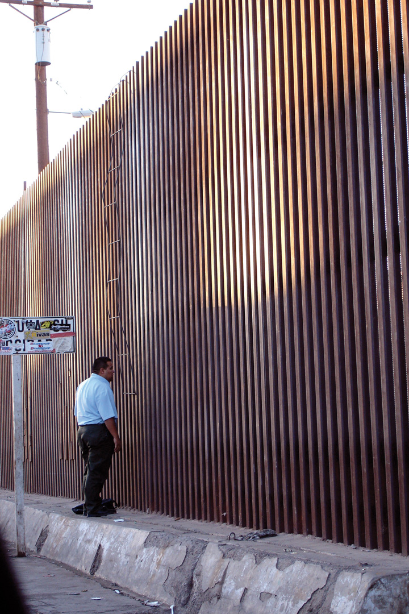Two men tried to cross the US border from the Mexican side with a homemade ladder built of rebar. They hooked the ladder to the wall. One man climbed over and was arrested by the US Border Patrol; the other man ran away and was arrested by the Mexican border police.
Source: Photo courtesy of Omar Bárcena, http://www.flickr.com/photos/omaromar/316206516.
The draw of opportunities and advantages has always pulled people toward the United States. While many of the Latin American immigrants enter the United States legally, according to the US Department of Homeland Security’s Office of Immigration Statistics, there were about 10.8 million undocumented immigrants residing in the United States as of 2010; 62 percent are from Mexico.“Immigration Statistics,” US Department of Homeland Security, http://www.dhs.gov/files/statistics/immigration.shtm. This number is lower than it was in previous years, possibly because of the economic recession and higher-than-usual rates of unemployment. The US-Mexican border is about 1,970 miles long and runs through an arid and open region between the two countries. It is difficult to control the illegal immigration across this border, as the attraction to American jobs is so compelling that people will risk death to cross the deserts of the Southwest. According to 2010 estimates, undocumented workers make up about 5 percent of the United States’ civilian workforce, including approximately 24 percent of the agricultural workforce.
The amount of remittancesMoney sent home by immigrants. sent from undocumented workers in the United States to Mexico is estimated in the billions of dollars. The remittances from Mexican nationals living outside Mexico and sending money home to their families are Mexico’s second-largest source of foreign income. Without remittances, many Mexican families would have a difficult time making ends meet.
Most African Americans were concentrated in the South before the Civil War, where they worked as slaves in the cotton and tobacco plantations that supported the region. In some counties, blacks made up most of the population, and this did not change when the war was over. Many of the newly freed slaves remained as poor agricultural workers in the South well into the twentieth century. Even as late as 1910, seven out of every eight African Americans lived in the South.
Figure 4.16 Civil War Division in the United States, 1861–1865

Union States are in the north, Confederate States are in the south, and border states are in the middle.
In the late nineteenth and early twentieth centuries, as the industrialization of northern cities was accelerating, the increased need for factory workers was largely met by immigration from Europe, especially from southern and eastern Europe. However, when the First World War began (1914), European immigration began to slow down. European immigration then nearly ground to a halt in the 1920s as Americans set quotas in place to reduce the number of Eastern European immigrants. At that time, the factories in the Manufacturing Belt continued to need workers, but instead of European workers, they recruited African Americans from the South.
This led to a massive migration of blacks from the South to cities of the North and West. This migration was so significant to African Americans in the United States that it is called the Great MigrationA massive migration of blacks from the South to cities of the North and West. Between 1910 and 1925, more than 10 percent of African Americans made the journey north.. Between 1910 and 1925, more than 10 percent of African Americans made the journey north, and even more followed. Examining a map of the distribution of African Americans today shows the legacy of the Great Migration, as blacks live in many parts of the United States, both in the South and in postindustrial cities of the north and the Midwest. Blacks also now live in Sun Belt cities, as people of all races look for jobs related to the new information technologies and service industries.
Figure 4.17 Black/African American Population by County, 2000
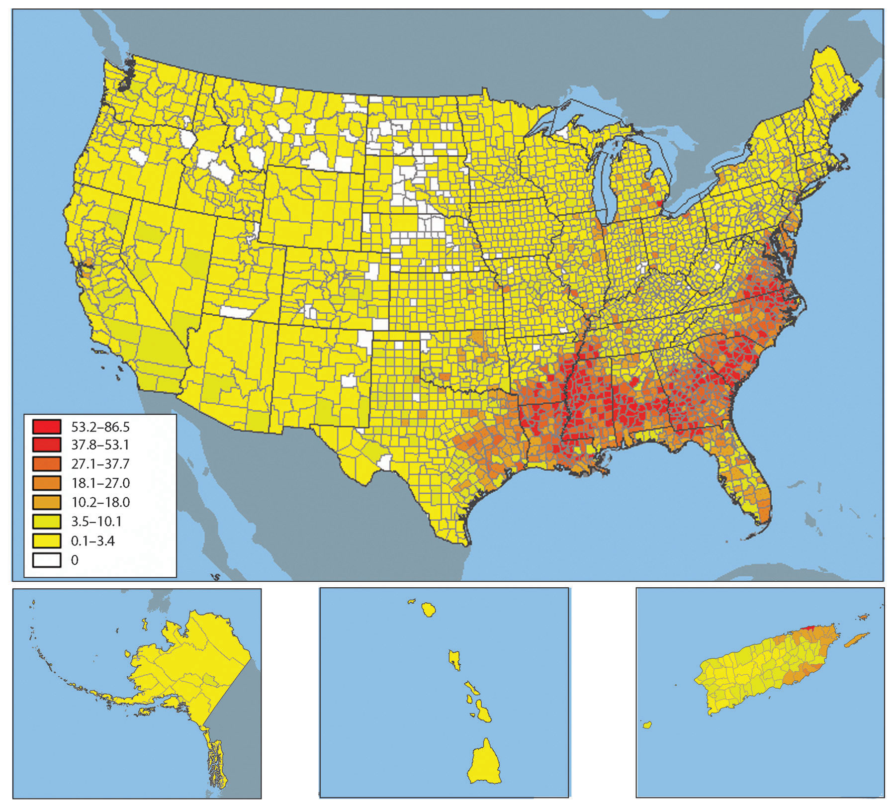Source: Map courtesy of NationalAtlas, http://www.nationalatlas.gov/.
Most early settlers to the United States were Protestant Christians: Puritans lived in New England and Anglicans (later called Episcopalians) lived in Virginia. Roman Catholic immigrants settled in Maryland, and members of the Society of Friends (Quakers) founded Pennsylvania. Even within that overall picture, there was a great deal of religious diversity in the United States, and that diversity increased as new arrivals came from different countries with different religious backgrounds. The current pattern of religious affiliation in the United States remains quite complex, and one can find observers of nearly every major religion, and many minor ones, in virtually every area of the country. That being said, there are clear patterns to the geography of religion in the United States that tell stories of immigration and migration history, as well as stories about other aspects of American history. The map of leading church bodies (Figure 4.18 "Distribution of Religious Organizations in the United States") shows regions of religious observance that are worth examining.
Figure 4.18 Distribution of Religious Organizations in the United States
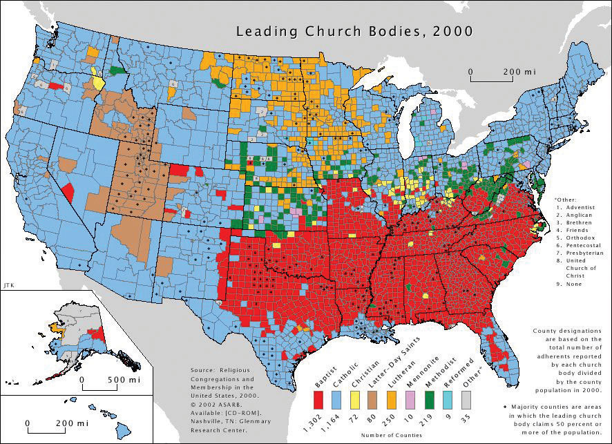Source: Map courtesy of Verrai, http://commons.wikimedia.org/wiki/File:Religions_of_the_US.PNG.
The most striking feature of the map is the block of red in the Southeast in which Baptist churches are the leading church body. Although Baptist churches are the leading religious body in about 45 percent of all counties in the United States, most of those counties are found in the South. This region is considered the nation’s Bible Belt, and it is a region in which churches are more likely than in other parts of the country to teach a literal interpretation of the Bible. Baptist churches grew in popularity in the South after the Civil War as more liturgical denominations such as Methodists went into decline, and Baptist churches are popular among both African American and white residents.
Figure 4.19
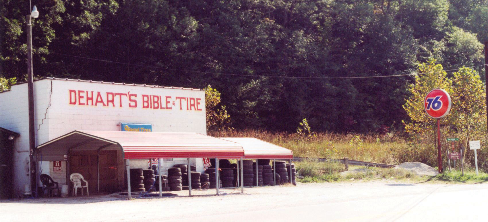Dehart’s Bible and Tire is located in the peripheral region of eastern Kentucky in the Bible Belt. Customers get a free Bible with every set of new tires.
Source: Photo by R. Berglee.
Another interesting Protestant region is northern Appalachia and the lower Midwest from Ohio to Iowa and Kansas. As seen on the map, some of these counties are Baptist, in some of them the strongest church presence is Methodist, and in others it is Christian churches (Disciples of Christ and historically similar denominations) that prevail. The Methodist and other Christian areas were heavily influenced by the Second Great Awakening of the early nineteenth century, which promoted the theology that every person could be saved through revivals. The movement provided for strong showings of Protestant denominations that arose during that time. The third Protestant region is the northern Midwest and Great Plains: Minnesota, the Dakotas, and surrounding areas. This was the destination of German and Scandinavian Lutheran settlers during the late nineteenth and early twentieth centuries, and the leading denominations today in much of that area remain Lutheran.
The Roman Catholic Church, which is the leading religious body in 40 percent of US counties, is well represented in the Northeast, West, and Southwest. In the Northeast and Midwest, the Catholic dominance points to nineteenth- and early twentieth-century immigration from Roman Catholic countries in Europe such as Italy, Ireland, and Poland. Those earlier Catholics have been joined more recently by large numbers of Hispanic immigrants. The dominance of Roman Catholics in the western United States, the Southwest, and even Florida in the Southeast are a reflection of the strong Hispanic presence in those parts of the country.
In the western United States, the Church of Jesus Christ of Latter-Day Saints (Mormon church or LDS) dominates a region including Utah and surrounding states. Utah was the destination of Mormon members as they migrated westward during the mid-nineteenth century.
Major urban centers are home to people who follow all the major religions of the world. Muslim populations are found in cities as a result of late twentieth century immigrants arriving from countries such as India, Pakistan, and places in the Middle East and moving to urban areas for employment. Detroit and its surrounding counties in southeastern Michigan are one part of the country with a high concentration of Muslim immigrants.
Figure 4.20 Map of Canada

Source: Map courtesy of E Pluribus Anthony, http://commons.wikimedia.org/wiki/File:Political_map_of_Canada.png.
Canada’s democratic state shares a similar developmental history and economic status with the United States. As of 2011, Canada had a population of just over thirty-four million (2011), which is less than the population of California. Canada is larger than the United States, making it the second-largest country in the world. However, despite this vast territory for a relatively small population, more than 90 percent of Canadians live within 150 miles of the US border. Northern Canada is not considered part of Canada’s ecumeneHabitable zone for permanent human settlement., or habitable zone, for permanent human settlement. Only a narrow band of territory in southern and eastern Canada has the climate and physical geography suitable for agricultural production and widespread settlement. Moreover, Canada’s economy is so closely tied to that of the United States that it makes sense for people to live close to the US border.
Canada consists of ten provinces and three territories (see Table 4.3 "Canadian Provinces, Territories, and Capitals"). Ottawa is the nation’s capital, and Toronto is its largest city.
Table 4.3 Canadian Provinces, Territories, and Capitals
| Population | Province/Territory | Capital | |
|---|---|---|---|
| Maritime Provinces of the east | 2.3 million | Newfoundland | St. Johns |
| Nova Scotia | Halifax | ||
| New Brunswick | Fredericton | ||
| Prince Edward Island | Charlottetown | ||
| French Canada | 7.9 million | Quebec | Quebec (City) |
| South Canada | 13.2 million | Ontario | Toronto |
| Prairie Provinces | 6.0 million | Manitoba | Winnipeg |
| Saskatchewan | Regina | ||
| Alberta | Edmonton | ||
| Pacific Canada | 4.5 million | British Columbia | Victoria |
| Territories | About 110,000 | Yukon | Whitehorse |
| Northwest Territories | Yellowknife | ||
| Nunavut | Iqaluit |
As you can see from Table 4.3 "Canadian Provinces, Territories, and Capitals", Ontario has by far the largest population of any of Canada’s provinces, with about 39 percent of the total. Quebec, the dominantly French-speaking province, is home to about 23 percent. Almost everyone else lives in British Colombia, west of the Rocky Mountains (13 percent); in the prairies (18 percent); or along the Atlantic coast (7 percent). The wide-open areas of Canada’s far north are occupied by only one-third of 1 percent of the population.
Type D (continental) climates dominate most of central Canada, with their characteristically warm summers and cold winters, although the farther north you go, the cooler the summers are. Canada’s west coast receives the most rainfall—between eighty and one hundred inches a year—while coastal areas in the Maritime Provinces can receive up to sixty inches per year. The northern territory of Nunavut barely receives ten inches per year, usually in the form of snow. Of course, far northern Canada has an arctic type E climate, and conditions there are so harsh that only a very few people inhabit it. The cultural influence of the colder climates and the long winters on the people is evident by the sports that are enjoyed by most Canadian citizens. Ice hockey is Canada’s most prevalent sport and its most popular spectator sport. Other sports such as curling are also common in Canada.
Figure 4.21 The Canadian Curling Team during the 2006 Winter Olympics in Torino

Source: Photo courtesy of Bjarte Hetland, http://commons.wikimedia.org/wiki/File:Curling_Canada_Torino_2006.jpg.
Canada has abundant natural resources for its population. The Canadian Shield is an area of rock and forest that covers much of central Canada around the Hudson Bay. This region, and the area to the east and west of it, provides timber and minerals for Canadian industries and for export. In the Maritime Provinces of the east, the main economic activities include fishing and agriculture. Some of Canada’s best farmland is located along the St. Lawrence River and in the southern Prairie Provinces of Manitoba, Saskatchewan, and Alberta. The St. Lawrence River region includes dairy farms and agriculture, which provide food for the larger cities of the region. The province of Ontario has fertile farmland on the north and east sides of the Great Lakes. The farmland in the Prairie Provinces has much larger grain and beef operations.
Centered in the province of Alberta is a large region of fossil fuel exploration. Coal, oil, and natural gas are found there in abundance, and much of it is exported to the United States for profit. Oil is found absorbed in surface soil called tar sands and is being extracted for energy. When tar sands are heated, the oil is separated and refined for fuel. Projections are that there is more oil in the tar sands of Canada than in the underground reserves of Saudi Arabia. Natural resources have even filtered into the cultural arena: Edmonton’s professional hockey team is called the Edmonton Oilers.
Figure 4.22 Physical Features of Canada

Source: Updated from map courtesy of http://commons.wikimedia.org/wiki/File:Can_Provinces_by_GDP_per_cap.svg.
The Rocky Mountains and the coastal ranges located in western Canada provide for mining and lumber mills. Vancouver, on the coast in British Columbia, has become a major port for Canada to export and import goods to and from the Pacific Rim. The Yukon Territory, also located in the mountains, has experienced a gold rush in years past. Canada has adequate natural resources to provide for its people and gain wealth.
As explained in Section 4.1 "Introducing the Realm", French fishermen and fur traders initially colonized Canada, the British later took it from the French, and immigrants from various other countries moved there to farm and otherwise make a living. Although none of the provinces retain French names, countless cities—especially in Quebec—have French names, among them Montreal, Trois-Rivières, Charlesbourg, and Beauport.
The names of several provinces indicate the British connection: Nova Scotia means “New Scotland,” and it was so named by the British when they took over the island from the French. Prince Edward Island was named for the father of the famous nineteenth-century British queen, Victoria. You can see remnants of British colonialism in the way Canadian government is organized. Canada, like many countries of Europe, including Great Britain, is a parliamentary democracy. The monarch of the United Kingdom is still the top-ranking government official in Canada, but only as a figurehead. The queen (or king) appoints a governor general to be her (or his) representative in the Canadian federal government. Again, this is a symbolic position. There are two chambers, a House of Commons and a Senate. Members of the House of Commons are elected and are called members of Parliament (MPs). Senators are appointed to a lifelong term by the prime minister.
As of 2006, about 58 percent of Canadians spoke English as their primary language, French was the mother tongueNative language. of 22 percent, and another one-fifth of the population (20 percent) spoke a mother tongue other than English or French.“Population by Mother Tongue, by Province and Territory (2006 Census),” Statistics Canada, http://www40.statcan.ca/l01/cst01/DEMO11A-eng.htm. For most of Canada the lingua francaA second language used for communication between people who do not share a mother tongue. remains English. The French-speaking portion of Canada is a reminder of Canada’s history as a French colony. Many of today’s French speakers are descendants of those earlier French settlers. The proportion of French speakers in Canada is declining as more and more immigrants (who also have higher fertility rates than FrancophonesA native French-speaking person or group. [French speakers]) arrive from other parts of the world and as more Francophones begin using English instead of French as their primary language. The new immigrants (along with native peoples) make up the 20 percent of Canada’s population who speak neither English nor French as their native language. About 90 percent of Canadian Francophones live in Quebec, which is a center of French culture in Canada.
The separation between French Canada and British Canada goes back to colonial times. Beginning in the 1530s, the French were the first to develop fur-trading activities in the region and colonize what is present-day Canada, calling it New France. The French claimed much of the St. Lawrence River valley and the Great Lakes region, including the region that is now Ontario. When Britain began to dominate the eastern coast of North America in the 1680s, they entered into a series of wars with France. As a result of these wars, New France was eventually turned over to Britain.
Not wanting continued war with France, Britain allowed the French-dominated region to retain its land ownership system, civil laws, and Catholic faith. The Revolutionary War in 1776, which granted the United States independence from Great Britain, also pushed many people of English descent—especially those who had sided with the British during the Revolutionary War—from the United States into Canada. British North America no longer included the United States; Canada became the main British colony in North America.
Figure 4.23 Bilingual Stop Sign in Ottawa, Ontario

Source: Photo courtesy of Steven Spell, http://commons.wikimedia.org/wiki/File:Bilingualstopsign.jpg.
In an attempt to keep the peace between French and English settlers, in 1791 the British Parliament divided Quebec into Upper and Lower Canada, which later evolved into the provinces of English-speaking Ontario and French-speaking Quebec. The Maritime Provinces of the east were then separated into individual provinces.
The cultural differences between Francophone Canada and the rest of Canada have since erupted into serious political conflicts. The Francophone areas, mainly southern Quebec, argue that they are treated unfairly, since they have to learn English but the rest of the country is not required to learn French.
During the second half of the twentieth century, many people in Quebec supported a separatist movementA movement of people who wish to have greater political autonomy. that sought to break Quebec off from the rest of Canada into an independent country. In the 1980s, the separatist initiative lost in a public vote, but only by a small margin. The issue of Quebec’s sovereignty continued to be raised in the public arena. In 1998, Canada’s Supreme Court ruled that Quebec could not separate from the rest of Canada under international law but that the matter would have to be negotiated between Quebec and the rest of Canada if secession was to proceed.
French and English are the two official languages of the Canadian government as a whole, but the French people in Quebec, fearing that English was dominating the media, the Internet, and industry to such an extent that it was endangering their French culture, have declared French as the only official language of the province. To combat the encroachment of English, laws were enacted in Quebec requiring all public advertising to be in French, or if other languages are used, they must be half the size of the French letters. All businesses employing more than fifty employees are required to conduct all business in French. Immigrants who wish to be citizens of Quebec must learn French. All primary and secondary education takes place in French unless the child’s parents were educated in English elsewhere in Canada. Civil servants dubbed the “language policeSlang term for civil servants who enforce French language laws in Quebec.” monitor and enforce the French language laws. A business found to be out of compliance with the language laws could be fined or shut down. Even though the official language of Quebec is French, since the national government takes place in both English and French, some services are still available in Quebec in English.
French Canada does not include the entire province of Quebec. Northern Quebec has traditionally been native Cree territory. When the initiative for Quebec to secede from Canada was being considered, an additional initiative was presented by the Cree to separate northern Quebec from the French region of Quebec. This would have caused the French separatist region of Quebec to lose major hydroelectric dams and important mineral and timber reserves. Other regions of Quebec that did not hold a French majority would then have promoted separating from Quebec and joining Ontario.
For Quebec to remain economically competitive, they would need the northern Cree region to remain part of the province to use the resources and energy found there. They would also need the businesses currently in Quebec to stay there, although many would probably have left if Quebec had become an independent state with French as the only language. When secession was being considered, it was found that businesses that employed more than fifty employees did not want to switch over and conduct all their business in French; they were conducting all their business in English to work with the global economic community. In 1994, the North American Free Trade Agreement (NAFTA)Agreement signed by Canada, the United States, and Mexico in 1994 creating a trade bloc between the three countries. was established between Canada, the United States, and Mexico. The goal was to open up new lines of business operations between the three countries and to increase economic opportunities to better compete with the European Union and the Pacific Rim nations. What would Quebec do if it separated from Canada? Would Quebec be able to join the NAFTA agreement? What if the other NAFTA partners cut off Quebec? Quebec would have faced serious economic consequences if they had separated from Canada. A number of English-speaking businesses have already moved to Ontario, Canada’s most populous province, to avoid changing to French. It appears Quebec will remain with the rest of Canada and work out any internal cultural issues.
Figure 4.24 Skyline of Toronto, One of the Most Diverse Cities in North America

Source: Photo courtesy of Marcin Wichary, http://www.flickr.com/photos/8399025@N07/2711707979.
Of course, we cannot forget the native groups who were displaced when the Europeans arrived. About 1.2 million people who identify themselves as AboriginalNative inhabitants. live in Canada, or about 3.8 percent of the total population. They include North American Indians (also called First NationsIndigenous people of Canada other than the Inuit.), MétisPeople of Canada who descend from both First Nations and Europeans. (descendants of both Europeans and American Indians), and InuitNative peoples of the Arctic regions of Canada and other countries. (inhabitants of the far Arctic north). Of those three groups, Inuit are the smallest, with only about fifty thousand remaining. These native people represent more than six hundred recognized groups and sixty-five language dialects, although only a handful of these languages are still spoken by a large enough core of people to remain viable languages for the long term.
Countless place names in Canada, just as in the United States, derive from native words. For example, the city of Quebec is built at the original head of navigation on the St. Lawrence River. Its name comes from an Algonquin word for “where the river narrows.” The word Canada is likely derived from the St. Lawrence Iroquois word Kanata, meaning “village” or “settlement.” While the French explorer Jacques Cartier was traveling up the St. Lawrence River in 1535, the indigenous peoples directed him to a specific village, the future Quebec City, using the word Kanata. He later used Canada to refer to the general area, and European mapmakers adopted it for the entire region.
Quebec is not the only place where devolutionary forces have been dividing cultural groups in Canada. In 1999, Nunavut officially broke from the Northwest Territory to become its own territory. Nunavut has only about thirty thousand people in an area larger than any other province or territory in Canada. It comprises about one-fifth of Canada’s land area. Most of the people who had claimed the land before the Europeans arrived are Inuit. Iqaluit, the capital city of Nunavut, is on Baffin Island near Canada’s east coast.
Canada has a great deal of ethnic diversity. One measure of this is the number of languages spoken there. One source estimates that there are about 145 languages spoken in Canada, including English and French. This reflects both the rich native heritage and the history of immigration from around the world. As of 2006, the foreign-born population was 6.2 million, or nearly 20 percent of Canada’s population. There are few countries that match this level of immigration. Even the United States had only about a 12.5 percent foreign-born population in 2006. If Canada’s current immigration rates continue, by 2017 more than 22 percent of Canada’s population will be foreign born, which equals the high rate seen in the early twentieth century, during the golden age of Eastern European immigration to North America. During this period, people from all the countries of Eastern Europe immigrated to all parts of Canada.Statistics Canada, http://www.statcan.gc.ca/start-debut-eng.html.
Figure 4.25 Evidence of Eastern European Immigration

This Ukrainian Greek Orthodox Church is located in the southern region of the Prairie Province of Manitoba.
Source: Photo by R. Berglee.
The current surge of immigrants to Canada does not include many Europeans. Instead, these immigrants come from Asian countries, especially China and countries in South Asia such as India and Pakistan. If immigration patterns stay the same, by 2017 about one in five people in Canada will belong to a nonwhite minority group. According to the 2010 Canadian census, more than a million Chinese and more than a half million South Asians lived in Canada. Other groups increasing rapidly include people from the Middle East and Korea.
Not surprisingly, Canada and the Unites States are each others’ largest trading partners. More than 80 percent of Canadian exports go to the United States and 70 percent of imports to Canada come from the United States. Except for some natural-resource industries, most businesses are centered in Canadian cities to take advantage of the available labor force. Canada is rapidly moving toward a knowledge-based economy built on innovation and technology. Knowledge-intensive industries, such as biotechnology and information technology, are on the rise, and these are typically located in cities to facilitate partnering with universities and other researchers.
Although Canada is developing into a knowledge-based economy, the foundations of the Canadian economy have always been its abundant natural resources. Canada’s primary industries have traditionally been agriculture, fishing, mining, fuel/energy, and logging/forestry. Success in tapping these natural resources for their economic benefit allowed the country to double in population since 1960 while the economy has increased sevenfold. The primary industries now make up less than 10 percent of the gross domestic product (GDP). Just as in the United States, the most dramatic structural change in the economy has been the rise of the service sector, which now employs about three-quarters of all Canadians and generates over 60 percent of the GDP. Canadian manufacturing has been a strong sector of the economy with close ties to United States and multinational corporations.
Figure 4.26 Bombardier CRJ900LR Jet Liner Taking Off from Heathrow Airport in London

The CRJ jet aircraft series is manufactured in Canada.
Source: Photo courtesy of Adrian Pingstone, http://commons.wikimedia.org/wiki/File:Lufthansa_cityline_crj900lr_d-acke_takeoff_london_heathrow_arp.jpg.
Canada’s economy is tightly tied to that of the United States. One of the best examples is how the Canadian economy fluctuates depending on whether the Canadian dollar was weak or strong compared with the US dollar. For example, in 2002, one American dollar was worth about $1.60 in Canada. For many years, the American dollar was much stronger on the world market than the Canadian dollar; therefore, Canadian goods and labor were less expensive for Americans than comparable US labor and goods. During the time of the weak Canadian dollar, many film and television industries moved to Canada to film television shows and movies, as it was less expensive to do so in Canada. Many popular television shows and movies have been shot in Canada, particularly in Toronto and Vancouver.
More recently, the value of the American dollar declined against other major currencies. The Canadian dollar remained strong, which meant that goods produced in Canada became much less affordable in the United States, causing the television and film industries to move back south of the border and Canadian exports to the United States to decline. In 2007, the Canadian dollar and the US dollar reached parity for the first time in thirty years. The two currencies continue to fluctuate with market values.
As mentioned earlier, NAFTA, the 1994 trilateral agreement between Canada, the United States, and Mexico, was one of the most significant economic events in North American history. For Canada, the agreement has meant more secure, stable access to US and Mexican markets. The agreement eliminated many tariffs; opened previously protected sectors in agriculture, energy, textiles, and automotive trade; and set specific rules for trade in services such as finance, transportation, and telecommunications. Perhaps most importantly for Canada, the agreement set rules for settling trade disputes.
The United States continues to exert its powerful influence on many countries in the world, but perhaps on none so strongly as Canada. Because of the geographical proximity of the two countries and the fact that the vast majority of Canadians live very close the US border, speak English as their first language, and share a great number of cultural similarities, American trends tend to be adopted by Canadians. Canadians differentiate themselves from Americans in legal issues, laws, and health care. For example, Canada has a health care system, funded by the provinces with financial help from the federal government, that provides free services to its citizens. Canadians often point to this difference as a one of the defining elements of their culture that is different from the United States.
Canada is a great consumer of American popular culture. Canadians listen to, watch, and read tremendous quantities of American music; television and movies; and news, books, and other literature—so much so that some Canadians believed Canadian culture was in danger of being extinguished. In response to these concerns, a law was passed and a watchdog agency created so that a certain percentage of all radio and television broadcasts emanating from Canadian radio and television stations had to originate in Canada or have significant Canadian content. Others were less worried about the impact of American pop culture on Canadian culture. This segment of the Canadian population felt that Canadians have long identified themselves in contrast to Americans; therefore, consuming American books, newspapers, television shows, and movies would only give Canadian a greater basis of comparison and thus strengthen the Canadian identity and perception of Canadian culture.
Identify the following key places on a map:
Provinces and Territories
Major Cities of Canada
Locations and Features
Figure 4.27 Main Regions of the United States and Canada

The Northeastern Core includes the upper Midwest (Illinois, Indiana, Ohio, and Michigan); the mid-Atlantic states of Pennsylvania, New York, Maryland, and New Jersey plus northern Virginia; and the southern New England states of Connecticut, Rhode Island, and Massachusetts. It also includes southern Ontario, Canada’s capital (Ottawa), and its largest city (Toronto). The physical environments of the Northeastern Core are quite diverse, including the northern Gulf-Atlantic Coastal Plain, the northern Appalachians, and the area surrounding the Great Lakes. This region, anchored by North America’s largest metropolis, New York, is the economic heart of the United States and Canada and home to more than a third of each country’s population. The megalopolisThe continually built-up area from Washington, DC, to Boston.—the built-up area from Washington, DC, to Boston—is part of this region. The core region contains the Manufacturing/Rust Belt, which was once the main manufacturing region for North America but suffered decline with the advent of the information age. The core region hosts the headquarters of countless corporations, banks, financial markets (e.g., Wall Street), universities (from community colleges to the Ivy League), cultural institutions (e.g., Broadway, world-class museums, dance and music organizations), and even global organizations such as the United Nations.
Figure 4.28 Megalopolis

Figure 4.29

Downtown Philadelphia’s city hall is an example of the urban qualities of the megalopolis that extends from Boston to Washington, DC.
Source: Photo courtesy of M. Berglee.
This large region includes geographic swaths of both wealth and economic suffering. Eight of the United States’ ten wealthiest counties are in this region, most of them in the Washington, DC, area, and a number of billionaires live in New York City. Meanwhile, cities such as Detroit and Cleveland have suffered from deindustrialization and have experienced a major population decline since the 1950s. Detroit, for instance, has lost 61 percent of its population since 1950, and the decline continues. The city decreased in population by 25 percent just between 2000 and 2010. While manufacturing is not dead in the Northeastern Core, heavy industry has been in long-term decline.
New England and the Canadian Maritimes overlap with the Northeastern Core because its major city—Boston—is considered the northern edge of the megalopolis. South of Boston, the low-lying states of New England were the center of colonial settlement in the region and were the birthplace of America’s Industrial Revolution. Southern New England began as an agricultural and fishing colony, and as industry developed in the nineteenth century, the region attracted European immigrants from Ireland, Italy, and elsewhere to work in its factories. The highly skilled workforce helped maintain a strong economy in southern New England, although there have been times of increased unemployment and economic hardship. Today the region has a more diverse economic base, including recreation and tourism, finance, telecommunications, and health care. The mountains of western New England have been particularly attractive for the development of ski resorts, and the coasts of New England are popular for summer vacationing.
As you move north from Boston, the terrain becomes more rugged and the soil less fertile. There are fewer economic reasons for people to live in northern New England, and the states of Vermont, New Hampshire, and Maine have always been less densely populated than the southern New England states. Maine is the least densely populated state in this region; about 90 percent of its land is forested, making it the most forested of the fifty United States. The vast Empty QuarterLand in western Maine that has virtually no inhabitants but a robust forestry industry. in western Maine consists of five million acres of privately owned forest and no permanent human inhabitants. Maine’s leading economic activity is manufacturing, and the bulk of it is oriented around paper and other wood products.
Northern New England transitions to the even more rugged and remote uplands of the Canadian Maritimes: New Brunswick, Nova Scotia, Prince Edward Island, and Newfoundland and Labrador. The soil quality is quite poor, as glaciers removed most of it during the various ice ages. The region has a harsh climate and is removed from the major population centers of Canada and the eastern United States. The Maritime Provinces have always been oriented to the sea. Fishing and other sea-oriented businesses have historically been strong here, but in recent decades overfishing of the North Atlantic has caused a decline in the fishing economy. Tourism has been increasing as a source of revenue, especially in places such as Prince Edward Island, in which tourism is the dominant economic activity. Newfoundland, including Labrador, is Canada’s poorest province.
West of the Canadian Maritimes lies the province of Quebec, the heart of which is the St. Lawrence River valley, a lowland separating the Appalachian Mountains to the south from the inhospitable Canadian Shield to the north. As explained in Section 4.4.3 "British versus French Canada", France was the first European country to colonize the coastal regions of what is now Canada, the St. Lawrence River Valley, most of the land surrounding the Great Lakes, and the Ohio and Mississippi River valleys, south to the Gulf of Mexico. Although Great Britain obtained all that land from France in 1763 following the French and Indian War, enough French inhabitants occupied part of that territory that the region did not automatically become English speaking. The core of French Canada today is the St. Lawrence Valley from Montreal to the Atlantic coast and west of Montreal to Ottawa and north to the Hudson Bay. These French speakers, the descendants of the early French settlers, created a vibrant French-Canadian culture. About 21 percent of Canadians speak French as their mother tongue, including about 80 percent of Canadians living in the province of Quebec.
Throughout most of its history, the people of Quebec have been rural farmers, eking out a living on less-than-ideal land in a place with a short growing season. One unique characteristic of the farms in French Canada is their size and shape. Early on, the farms were laid out as long lotsFarms in French Canada that were about ten times as long as they were wide., maximizing the number of farms that would have access to the transportation artery—usually a river, but sometimes a road. Each farm was about ten times longer than it was wide and had a small access point to the river, some fertile riverfront land, and a woodlot at the rear of the farm. This land-use pattern was common throughout French Canada and can even be seen today in the United States in former French colonies such as Tennessee and Louisiana.
Figure 4.30 Long Lot Farms Typical in French Canada

Source: Image courtesy of E. Ratajeski.
Since then, Quebec’s economy has developed to include a manufacturing sector (fueled by abundant hydroelectricity), tourism, and a variety of tertiary and quaternary industries. Montreal, Canada’s second-largest metropolitan area with 3.9 million residents, is the largest French-speaking city in the Western hemisphere. It developed as the region’s most important city in the mid-nineteenth century, as it controlled access through the St. Lawrence River and the Great Lakes. It became a diverse industrial center, with oil refineries, steel mills, flour and sugar refineries, and shop yards for railroad companies. Montreal attracted English speakers as well as the local Francophones, and at times in its history it has even had more English speakers than French speakers, despite being surrounded by a Francophone countryside. Most of northern Quebec is sparsely populated because of the lack of quality soil for agriculture, but a paper and pulp industry based on its forests has developed over the twentieth century, as well as hydroelectric power generation.
The South includes the entire southeastern portion of the United States from Kentucky south to Louisiana, east to Florida, and north to Virginia. The South consists of most of the Gulf-Atlantic Coastal Plain and the southern portion of the Appalachian Highlands.
Before the Civil War, the coastal plain was dedicated to plantation agriculture using African slave labor. Land not used for plantation crops such as tobacco, cotton, and rice was typically farmed by poor whites and later by poor blacks. Some were sharecroppers, while others farmed their own small plots, especially on the lesser-quality land in Appalachia. The South had little urbanization or industrialization at the time of the Civil War. Well into the twentieth century, the region remained rural and economically deprived.
Figure 4.31

Names often reflect the cultural region of their location. Business names with “Dixie” in them can be found throughout the South. The Dixie Grill restaurant is located in Morehead, Kentucky.
Source: Photo by R. Berglee.
Coal mining was a major source of employment in places such as West Virginia and eastern Kentucky for the first two-thirds of the twentieth century, but increased mechanization of mining methods, as well as new mining techniques such as mountaintop removal mining, decreased the number of miners needed, even as coal production increased.
The Appalachian South is perennially plagued by high unemployment, poverty, and difficult social conditions. Other areas of the rural South are also among the poorest in the nation, including the Mississippi Delta and the lower Mississippi River valley. Despite the continued swaths of poverty in the South, parts of the region have prospered in the past generation as Sun Belt migrants have moved to southern places such as Atlanta, Charlotte, Tampa, Miami, and dozens of smaller cities. This has fueled a period of urbanization and economic growth, and the newfound prosperity has helped integrate the South into the nation’s economy.
The center of the continent contains a relatively level agricultural region: the Midwest and the Great Plains. This land includes some of the most fertile agricultural land in the entire world and has been dubbed America’s breadbasket. The climate gets progressively more arid as you move to the west within this region, and the type of agriculture changes with the decrease in precipitation. Closer to the Rocky Mountains, the land is typically used for raising cattle, but enormous grain farms are found where water is available (especially through irrigation). The water for irrigation comes from the continent’s largest aquifer, the Ogallala AquiferOne of the world’s largest aquifers, it lies under the Great Plains states and supplies water for irrigating the rich farmland on the surface. This aquifer is declining in size each year.. Water is often pumped to the surface using a system called center pivot irrigationA system of crop irrigation in which the irrigation machinery rotates from a center point, creating circular fields. Center pivot irrigation was used in the Great Plains to irrigate crops with water from the Ogallala Aquifer.. The heart of the spring wheat belt is North Dakota, and the crop is also common in eastern Montana and in Canada’s Prairie Provinces of Alberta, Saskatchewan, and Manitoba. Winter wheat is common in Kansas and surrounding states. Farther to the east, where precipitation is more abundant, is the Corn Belt, focused in Iowa and Illinois.
Figure 4.32 Acres of Corn Harvested for Grain as a Percentage of Harvested Cropland Acreage, 2007

This map shows the extent of the Corn Belt.
Source: Map courtesy of US Department of Agriculture, http://www.agcensus.usda.gov/Publications/2007/Online_Highlights/Ag_Atlas_Maps/Crops_and_Plants/Field_Crops_Harvested/07-M165.asp.
Figure 4.33 Satellite Image of Corn, Sorghum, and Wheat Fields in Southwestern Kansas

The circular fields are between a half-mile and mile in diameter, and are characteristic of fields that use center-pivot irrigation.
Source: Photo courtesy of NASA/GSFC/METI/ERSDAC/JAROS and U.S./Japan ASTER Science Team, http://earthobservatory.nasa.gov/Newsroom/NewImages/images.php3?img_id=17006.
The dominant city in this region is Chicago, which developed as a market town for the livestock and grain produced in the surrounding states and was linked to its hinterland through a complex network of rail lines. In fact, nearly all the major cities of this region developed as places for the buying, selling, and processing agricultural products. Today the Midwest and the Great Plains remain the most important food-producing areas in North America, although as agriculture has become increasingly mechanized and farms have gotten larger, the number of farmers has decreased. This region, especially the Great Plains, is experiencing a period of long-term population decline and aging.
The states of Texas, New Mexico, and Arizona are considered the Southwest. The climate of the Southwest is more arid and receives a high amount of sunlight throughout the year. Desert conditions are integrated with higher elevations in the mountainous areas. Eastern Texas receives more rainfall from the Gulf of Mexico, and western Texas and the states of New Mexico and Arizona are quite arid and receive less rainfall. These conditions are more favorable to cattle ranching than to other agricultural activities. Large farming operations exist where water is available for irrigation. The warmer climate has been attractive for development and people emigrating from the colder regions of the north.
Figure 4.34 Typical Home in a Phoenix Suburb, Where Water Is a Valued Commodity

There is no grass to mow, and cactus and palm trees are common.
Source: Photo by R. Berglee.
The Southwest has a strong Hispanic heritage and was part of Spain’s Mexican colony before England established colonies on the East Coast (the first Spanish settlers arrived in New Mexico in 1598). All three states have a large contingency of Hispanic residents, some of whom have descended from early pre–United States settlers, while others have come into the United States more recently across the long desert border between Mexico and the United States. According to the 2010 census, about 46 percent of New Mexico’s population was Hispanic or Latino, and in Texas and Arizona the figures were 37 percent and 30 percent, respectively.“State & County QuickFacts,” US Census Bureau, http://quickfacts.census.gov/qfd/index.html.
In Arizona, strong centrifugal forces have been in play because of its tough legal measures against illegal immigration. This issue exposes the social rift between the more European population of the state and the Hispanic immigrants. In 2008, the US Department of Homeland Security’s Office of Immigration Statistics estimated that Arizona had one of the fastest-growing illegal immigrant populations in the country at 8.4 percent of the population.Michael Hoefer, Nancy Rytina, and Bryan C. Baker, “Estimates of the Unauthorized Immigrant Population Residing in the United States: January 2008,” Department of Homeland Security, accessed September 20, 2011, http://www.dhs.gov/xlibrary/assets/statistics/publications/ois_ill_pe_2008.pdf. This was the second-highest percentage of undocumented residents in the country, after Nevada. In April 2010, the New York Times reported that Arizona’s governor signed the nation’s toughest bill on illegal immigration into law, designed to identify, prosecute, and deport illegal immigrants.Randal C. Archibold, “Arizona Enacts Stringent Law on Immigration,” New York Times, April 23, 2010, accessed September 20, 2011, http://www.nytimes.com/2010/04/24/us/politics/24immig.html. At the same time, Reuters reported that the when the bill was debated in the Arizona senate, the number of illegal immigrants was listed at 10 percent of the population.“Arizona Passes Tough Illegal Immigration Law,” Reuters, April 19, 2010, accessed September 20, 2011, http://www.reuters.com/article/2010/04/19/us-immigration-usa-arizona-idUSTRE63I6TU20100419. Some opponents of the tough illegal immigration laws claimed that law enforcement officials would use racial profiling to target Hispanic residents, and the federal government took the state to court to halt its enforcement.
The Southwest also has a strong Native American presence, especially in New Mexico and Arizona. Twenty-one federally recognized tribes with more than 250,000 people (4.9 percent of the state’s population) live in Arizona, and their reservations and traditional communities make up more than one-fourth of the state’s land. The Navajo tribe is the largest in the United States, with more than 100,000 members in Arizona alone and others in surrounding states. The considerable Native American and Hispanic population in the Southwest means that non-Hispanic whites make up a minority of the population in New Mexico and Texas.
Figure 4.35 Navajo Dancer Performing the Eagle Dance

One of the Pollen Trail Dancers, a Navajo group near Joseph City, Arizona, performs the Eagle Dance on September 21, 2010, on the scenic South Rim of Grand Canyon National Park between Hopi House and Verkamp’s Visitor Center.
Source: Photo courtesy of Michael Quinn and Grand Canyon NPS, http://www.flickr.com/photos/grand_canyon_nps/5128920480.
The three Southwestern states have been recipients of Sun Belt migrations over the past few decades, as people have moved to the Southwest for tertiary-sector jobs and for the region’s warm climate. The region is quite urbanized, and most of the new migrants are moving to cities. Three-fourths of Arizona’s population live in the Phoenix or Tucson metropolitan area. The most populous metropolitan area in the Southwest is Dallas–Fort Worth, Texas, with 6.4 million residents in 2010, making it the fourth-largest metropolitan area in the United States. The Houston metropolitan area is not far behind with 6.1 million residents. The economy of Texas used to be based on oil and natural gas, but it has since become more diversified. Residents of these cities work in high-tech manufacturing, health care, business, and information. One of the most famous high-tech industries in Texas is space: Houston is home to the National Aeronautics and Space Administration’s (NASA) Lyndon B. Johnson Space Center, where astronauts and thousands of others work in the space industry.
From the Rocky Mountains to the Sierra Nevada and the Cascades and the Intermontane Basins and Plateaus in between, this part of North America has gone from the old Wild West to an area of rapid economic and population growth. The region encompasses western Colorado; western Wyoming; western Montana; Idaho; Nevada; Utah; the eastern portions of Washington, Oregon, and California; and the southern portion of the Canadian Rockies.
Figure 4.36 Rocky Mountains of Western Montana on US Highway 2

Source: Photo by R. Berglee.
The population of the Mountain West is growing much faster than the population of the United States as a whole. For example, Nevada’s population grew 32.3 percent from 2000 to 2009, which is more than three times as much as the United States as a whole (9.1 percent). All US states in this region, except for Montana, grew at faster rates than the US average. Utah grew 24.7 percent, Idaho grew 19.5 percent, and Colorado grew 16.8 percent. What is fueling this growth? It is part of the larger pattern of Americans flocking to the Sun Belt, searching for an attractive climate and lifestyle. Jobs have been created in recreation (gambling, skiing), in high-tech firms, and in other tertiary sector industries. Many of the migrants come from southern California because the housing in the Mountain West is more affordable and the region is much less crowded. Nearly all the growth is occurring in urban and suburban areas.
However, the rapid growth of the West since 1990 has come at a cost. In some areas the large population is putting a strain on physical resources, such as water. Water is a hot-button political issue, particularly in the more arid states such as Nevada. Las Vegas, for example, is a desert city that gets 90 percent of its water from a Colorado River reservoir: Lake Mead. This water comes from snowmelt in the Rocky Mountains far to the east, and due to drought and high water demand, Lake Mead’s water level has been dropping. If current patterns persist, Las Vegas will have a water crisis soon. The water shortage is happening even though Las Vegas has managed to reduce per capita water usage by raising prices for water and creating incentives to remove grass lawns. Las Vegas recycles 94 percent of all sewage water, which is the highest rate in the United States.
As the West’s population increased rapidly, the region’s urban areas became part of the real estate bubble of the early 2000s. Real estate prices grew and the housing industry built one residential subdivision after another in the suburbs surrounding cities such as Las Vegas, Denver, and Salt Lake City. However, in the late 2000s the real estate market collapsed in many parts of the country, and Western cities were hard hit. As of early 2011, three of the five states with the highest foreclosure rates were in this region (Nevada, Utah, and Idaho), and the others were bordering states (Arizona and California).
Figure 4.37 Urban Growth in Las Vegas, Nevada, from 1984 to 2009

Notice the dark purple of city streets and the bright green of irrigated vegetation.
Source: Images courtesy of NASA, http://landsat.gsfc.nasa.gov/images/archive/e0018.html.
The Pacific Coast includes the coastal portions of California, Oregon, and Washington, plus the southwestern portion of British Columbia in Canada. This region is typically thought of as two subregions: California and the Pacific Northwest. The two areas are quite different from each other in terms of climate and economy. However, both areas are part of the so-called Ring of FireThis phrase describes the perimeter of the Pacific Ocean and the area’s frequently occurring volcanoes and earthquakes. that encircles the Pacific Ocean. The Ring of Fire is a zone of earthquakes and volcanic eruptions that occur near where the Pacific tectonic plate meets the surrounding plates. In the United States, two areas of concern are the San Andreas FaultA fault between the Pacific and the North American continental plates that runs about 810 miles through California and is the cause of many earthquakes in the region. in California and Mount St. HelensThe volcano in the US state of Washington that erupted in 1980. in Washington. The 1906 earthquake that destroyed San Francisco was a result of activity on the San Andreas Fault, and scientists predict that strong earthquakes will reappear along the fault in the future. Thousands of small earthquakes occur along the fault every year. Mount St. Helen’s is a volcano in the Cascades that erupted in 1980, killing fifty-seven people and destroying hundreds of square miles of forest.
Figure 4.38 The San Andreas Fault

The Pacific tectonic plate is moving northward relative to the North American plate.
Source: Image courtesy of USGS, http://nationalatlas.gov/articles/geology/features/sanandreas.html.
The Pacific Coast represents a large population center a continent away from what we consider the North American core. Most of the region’s population is urban, and Los Angeles and its metropolitan area is by far the largest area of settlement. Twelve percent of the US population lives in California (thirty-seven million people), and the greater Los Angeles metropolitan area has nearly eighteen million people. Los Angeles is the second-largest US city after New York. Los Angeles is the quintessential automobile city. It developed into a major city in the mid-twentieth century at the time that automobile ownership had become common, and people who lived in the area tended to move to suburbs that were connected to each other by an extensive highway system. Los Angeles is a highly decentralized city, unlike cities in other parts of North America that formed during other transportation regimes.
The Pacific Coast region is also famous for its agriculture. California’s Central Valley lies between the Coast Ranges to the west and the Sierra Nevada to the east and is among the most productive agricultural areas in the world. The irrigated farmland in the valley produces all types of nontropical crops and is the largest US producer of tomatoes, grapes, almonds, and other foods. When other parts of the country are still frozen in the winter months, the fields of the Central Valley are already producing bountiful harvests. California is also famous for its wine production, especially in Napa Valley near San Francisco.
Figure 4.39 The Pacific Ocean from Venice Beach in Los Angeles

Source: Photo by R. Berglee.
Besides agriculture, the economic base of the Pacific Coast is quite diverse and rich. If it were an independent country, California would be the world’s sixth-largest economy. Los Angeles is considered the capital of the US entertainment industry, and other major industries include aerospace, manufacturing, and foreign trade. The port of Los Angeles is the busiest in North America, receiving shipments of goods from China and other Asian countries. Silicon Valley, near San Francisco, is a key area for high-tech research and Internet commerce. The Pacific Northwest is home to major corporations such as Boeing (whose headquarters recently moved to Chicago), Microsoft, and other famous companies such as Starbucks, Amazon.com, REI, T-Mobile, Costco, and Eddie Bauer. One of the richest Americans, Bill Gates, lives near Seattle.
Across the border to the north, Vancouver is Canada’s third-largest metropolitan area with over two million residents. Vancouver is unlike any other city in North America. Nearly one-third of its residents are of Chinese origin, and more than half its population speak a language other than English at home. Vancouver began as a logging town but developed into its position as the Asian gateway to Canada because of its port, the busiest in Canada. Vancouver is a popular location for the film industry and is sometimes dubbed as “Hollywood North.” It is also growing in the biotechnology and software industries.
The North is the least densely populated of any region in North America due to its brutally cold winters, short growing season, and poor soils. It includes the boreal forests of the upper Great Lakes region and the Canadian Shield and the territory to the north of the tree line that extends beyond the Arctic Circle. Physically, this region is immense, including the state of Alaska plus most of Canada. The climate is similar to that of Russia: cold continental and arctic climates, arctic air masses swooping down from the north, and long winters. Most inhabitants of the northern portions of North America live in the forested areas rather than in the frozen Arctic.
Two groups of people live in this region. First are the native peoples who have always lived there. They are small in number and traditionally make a living by hunting and fishing. More recently, the native populations such as the Inuit and the First Nations in Canada subsist by combining wage employment with their traditional means of living off the land. American Indians or Alaskan natives make up about 15 percent of Alaska’s population, for a total of roughly 106,000 people. In Canada’s Northwest Territories, First Nations people make up just over half the population, but the total population is quite small—only about 41,000 in the entire territory. In Nunavut, the native population is about 85 percent of the total 30,000 residents, living in a territory the size of Western Europe.
Figure 4.40 Radar Station at Point Lay, Alaska

Source: Photo courtesy of US Air Force, TSgt Donald L. Wetterman, http://commons.wikimedia.org/wiki/File:Point_Lay_Alaska_DEW_Line.jpg.
The other residents are more recent immigrants who are there to exploit the land’s natural resources. The economy is dominated by the primary economic sector: forestry, oil and natural gas extraction, and mining. In the Canadian Shield, metallic ores such as copper, gold, nickel, silver, and uranium are found in the rocks and diamond mines are in operation, as are mines producing rare earth elementsA group of seventeen metallic ores that are often used in high-tech applications. used in computer screens, electric car batteries, and computer hard drives. These elements include metals such as cerium, terbium, dysprosium, and neodymium. Alaska is an oil-producing state, and the decision of whether to open additional areas of Alaska’s Arctic to oil drilling remains controversial and uncertain.
Identify the following key places on a map: